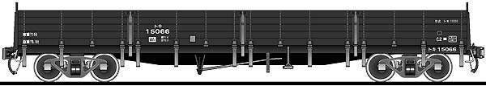

２０２０年度はこちら！
２０２１年度はこちら！
２０２２年度はこちら！
2023. 4.2～ 上越二人旅
2023. 7.1 １１７系お名残乗車
2023. 7.14～ ＷＥＳＴ ＥＸＰＲＥＳＳ 銀河
2023. 8.6 富山の温泉
2023. 8.12 東尋坊と新垂井線
2023. 8.30 浅間温泉
2023. 9.13～ 北海道
2023.11.10 妙見の森
2023.12.15～ はわい温泉
2024.1.4 えちぜん鉄道
2024.1.8 参宮線関西本線かわった温泉めぐり
2024.2.14～15 ロマンスカーとケーブルめぐり
2024.3.7 最後の北陸本線
2024.3.13～15 新幹線温泉めぐり
2024.4.3 吉岡温泉
2024.6.9～10 北陸新幹線初乗り！
2024.6.27～29 沖縄
2024.8.31～9.3 隠岐
2024.10.5～ いわき
★岩佐模型店のコーナー★
★固定レイアウト作成のコーナー（ジオラマ作成記）★

★昔の写真のコーナー★
